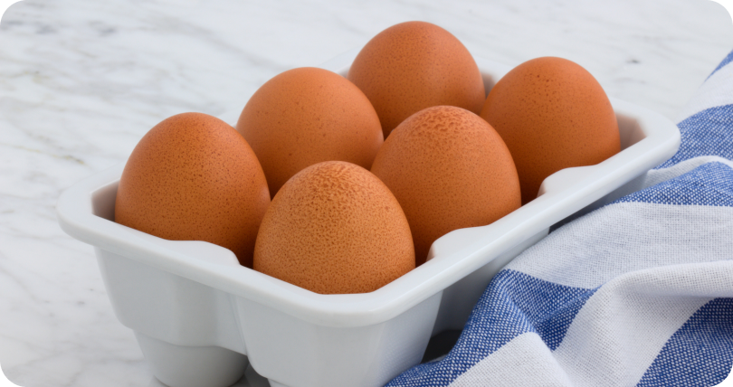
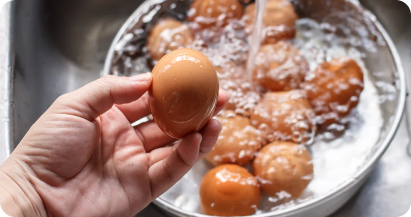
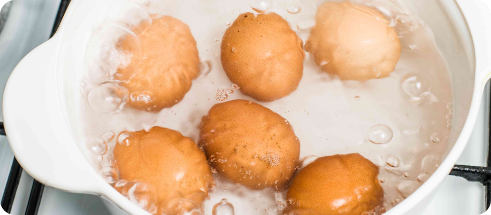

Яйца — это питательный и полезный продукт, который можно приготовить множеством способов. Сваренные яйца — простой и вкусный завтрак, который подходит на любой день. В этой инструкции рассказываем, как быстро и просто сделать яйцо всмятку.
Шаг 1
Подготовка яиц
Яйца должны быть комнатной температуры, чтобы в процессе варки скорлупа не треснула. Поэтому достаньте их из холодильника примерно за час до приготовления.
Дополнительно, чтобы уберечь яйца от трещин, можно очень аккуратно проколоть скорлупу с тупой стороны, введя иглу на несколько миллиметров, чтобы не повредить плёнку изнутри.
Тщательно промойте яйца под проточной водой. На них не должно остаться никаких загрязнений.
Яйцо должно быть комнатной температурыНе забудьте промыть все яйца
Шаг 2
Варка яиц
Выложите яйца в кастрюлю и залейте холодной водой так, чтобы она была выше их на 2–3 см.
Слегка посолите, доведите до кипения на средне‑высоком огне. Затем убавьте его до умеренного и варите 2 минуты.
Кипятить нужно совсем недолго
Шаг 3
Очистка
Сразу после варки положите яйца в ледяную воду на 1–2 минуты. Это остановит процесс приготовления, а ещё облегчит удаление скорлупы. Приятного аппетита!